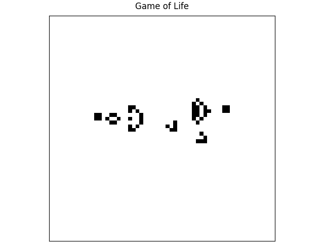

Research Python Patterns: Solving Common Pain Points in Research Software Development
This exemplar explores software design patterns, tools, and Python packages that make code development easier and more maintainable. Since not all design patterns translate well to a research context, the focus here is on patterns that are practical and beneficial for research workflows, including concepts such as coupling and cohesion, dependency injection, linting, and Model-View-Controller (MVC) architecture. To demonstrate these concepts in action, we use Conway's Game of Life as our working example, a well-defined yet rich problem.
The Game of Life is a simulation of an array of pixels which can be "alive" or "dead". Each generation, the state of the pixel is determined by the state of pixels around it in the previous generation. This leads to a complex and interesting system from a simple set of rules. This is a gif of the Gosper glider gun pattern which creates cells that glide across the screen.

This exemplar was developed at Imperial College London by Hui Ling Wong in collaboration with Alex Dewar from Research Software Engineering and Chris Cooling from Research Computing & Data Science at the Early Career Researcher Institute.
Learning Outcomes 🎓
Software development comes with common pain points. After completing this exemplar, students will:
- Understand how linters can catch and prevent common code quality issues.
- Understand the pain points that design patterns solve and how to apply them in a research context.
- Understand why unvalidated user input can cause problems and how packages such as
pydanticandtypercan help, with an introduction to dependency injection and type checking. - Understand how type hinting in Python reduces ambiguity and makes code easier to maintain.
- Understand how tooling such as
pre-commitand type checkers can catch errors before they become problems. - Understand how to build a Python command line tool to make your code more accessible and reusable.
Target Audience 🎯
Anyone working with Python or interested in learning about software architecture/design patterns that apply to any language.
Prerequisites ✅
Academic 📚
- Foundational understanding of the Python programming language
- Familiarity with installing software and packages.
System 💻
- Ability to install new software on the machine
Getting Started 🚀
- Install
uvby following the instructions here. - Create a clone of the repository using,
$ git clone https://github.com/ImperialCollegeLondon/ReCoDE-research-python-patterns.git - Move into the root directory of the project. On linux, this would be,
$ cd ReCoDE-research-python-patterns - In the root directory of the project, create a virtual environment with
uvusing$ uv venv - Activate the Python environment based on the instructions that appeared from running
uv venv - Install the Game of Life Python package in the virtual environment using,
$ uv sync - Run the game of life in the command line using,
This runs the game of life in the terminal rather than creating an output file. This runs indefinitely to stop it press
$ game-of-life cli basic-config.yamlctrl+c. Note: the basic-config.yaml file is the root of the repository.
Disciplinary Background 🔬
One of the most common challenges in research software development is knowing how to structure code in a way that is maintainable, readable, and reusable. After all, the most frequent user of your own code is yourself, and past you and future you need to be able to communicate clearly through it. Alongside this, there is a wealth of tooling available that can make developing research software significantly easier, yet much of it remains unknown to most researchers. This exemplar was born out of the pain points encountered first-hand when writing research software, and aims to address those challenges in a practical and accessible way. As these are fundamentally generic software development issues, this exemplar is relevant and useful across all research disciplines.
Software Tools 🛠️
Programming language: Python
Tools:
uv- for package and environment managementruff- for linting and formattingprekorpre-commit- for git hook script to check code quality before committing to gittyorpyright- for Python static type checking
Libraries:
numpyfor working with arrayspytestfor testing codematplotlibfor creating plotspydanticfor handling input from userspyyamlfor loading configuration files from yaml file formattyperfor building a command line tool
All dependencies for this project can be found in the pyproject.toml file
Project Structure 🗂️
.
├── LICENSE.md
├── README.md
├── docs
│ ├── assets
│ │ ├── favicon.ico
│ │ ├── ...
│ │ └── gosper-glider-gun.gif
│ ├── content.md
│ └── index.md
├── mkdocs.yml
├── pyproject.toml
├── ruff.toml
├── src/game_of_life
│ ├── __init__.py
│ ├── main.py
│ ├── ...
│ └── view
├── tests
│ ├── __init__.py
│ ├── ...
│ └── test_view.py
└── uv.lock
Code is organised into logical components:
docsfor documentationassetsfor static files like images that are used in the documentationsrcfor core code, potentially divided into further modulestestfor testing scripts
Best Practice Notes 📝
- Code testing and/or test examples with
pytestand docstring tests - Use of continuous integration
- Use of conventional commits for commit messages
- Use of design patterns, dependency injection, static type checking, linting and pre-commit
Estimated Time ⏳
The exemplar has three main parts to it. For the first two, you're welcome to read them as standalone topics. For the final one, you'll need to work through all parts if you're not already familiar with the first two topics.
- Python tooling to aid software development
- Python type hinting
- Software design patterns which makes code more maintainable. This starts with an introduction to the Model-View-Controller architecture
| Section | Time (minutes) |
|---|---|
| Tooling | 14 |
| Type Hinting | 17 |
| Software Design Patterns | 58 |
Additional Resources 🔗
- Book: Conway's Game of Life - Mathematics and Construction by Nathaniel Johnston and Dave Greene. DOI: 10.5281/zenodo.6097284
- Webpage: Game of Life Patterns
Licence 📄
This project is licensed under the BSD-3-Clause license.